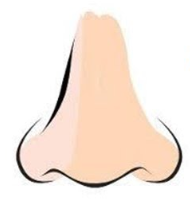

|  |
Sentido del olfato o del olor: es el otro sentido químico. Es diferente al del gusto, hay centenares de receptores olfativos, cada uno se une a una molécula de características en particular, según la teoría actual. En el cerebro, el olfato es procesado por el sistema olfativo. Las neuronas olfativas del receptor en la nariz se diferencian de la mayoría de las otras neuronas que mueren y regeneran sobre una base regular. Hay que destacar que en organismos acuáticos no hay diferencia importante entre el olor y el gusto. Richard Axel y Linda Buck obtuvieron el Premio Nobel de Fisiología y Medicina 2004 por su trabajo sobre el olfato, publicado primero en un artículo en 1991 que describió la gran familia de cerca de mil genes que codifican los receptores del olor y cómo los receptores se relacionan con el cerebro. |
|---|